Planeta de Miller
El primer mundo tras el agujero de gusano, y el más caro: está tan pegado a Gargantúa que una hora en su superficie cuesta siete años a quien espera en la nave. Lo que en el horizonte parecen montañas son olas.
Qué es
El primer planeta que pisa la tripulación después de cruzar el agujero de gusano. Visto desde el Ranger es una esfera de agua sin una sola isla: un océano global de apenas un palmo de profundidad bajo un cielo pálido y sin sol visible. Se puede caminar por él, el traje no se hunde; el problema no es el fondo.
El problema está en el horizonte. Lo que parecen cadenas de montañas recortadas contra el cielo son olas: paredes de agua de varios cientos de metros que recorren el planeta sin romper nunca, porque no hay costa contra la cual romper. Entre una y otra, el mar queda quieto como un charco. Esa calma es la trampa: da tiempo a bajar, a caminar, a creer que se puede trabajar tranquilo.
En la historia
Miller es la primera opción porque su sonda seguía transmitiendo un «pulgar arriba» automático. Lo que nadie quiere decir en voz alta es el precio: el planeta está tan hundido en el pozo gravitatorio de Gargantúa que el tiempo ahí corre distinto. En la película, cada hora en la superficie equivale a siete años para quien se queda en órbita.
Cooper acepta bajar apurado —«entramos, salimos»— y deja a Romilly esperando arriba. Abajo se les va la mano: la nave de la doctora Miller no está a la deriva, está hecha pedazos en el fondo, y entre buscar los datos y pelear contra una de esas olas, Doyle no vuelve. Cuando el Ranger consigue despegar y reencontrarse con la Endurance, Romilly ha envejecido veintitrés años solo.
Esos veintitrés años son el golpe que ordena el resto de la película. Cooper los mira en los mensajes acumulados de Murph, que ahora tiene su misma edad y le habla con rabia. La promesa de volver deja de ser una fecha y pasa a ser una deuda: cada planeta que sigue se mide contra lo que Miller ya le costó.
Rasgos distintivos
- Un océano que cubre el planeta entero, sin tierra firme, de muy poca profundidad: se camina con el agua a la rodilla.
- Olas del tamaño de montañas que cruzan el mundo de forma periódica y no rompen: entre una y otra, el mar queda casi liso.
- Proximidad extrema a Gargantúa: la causa de la dilatación temporal y de todo lo que sale mal ahí.
- Una hora abajo = siete años arriba. La parada, que debía durar minutos, costó veintitrés años.
- Una gravedad algo mayor que la terrestre, que vuelve lento y pesado cada movimiento con el traje.
- Los restos de la expedición de la doctora Miller: la misión anterior ya había fracasado, y su señal de éxito era solo el oleaje sacudiendo la sonda.
En celuloide
La bajada a Miller y su costa imposible en una tira que desfila sin cortes; el cursor o el foco la frenan para mirarla de cerca.
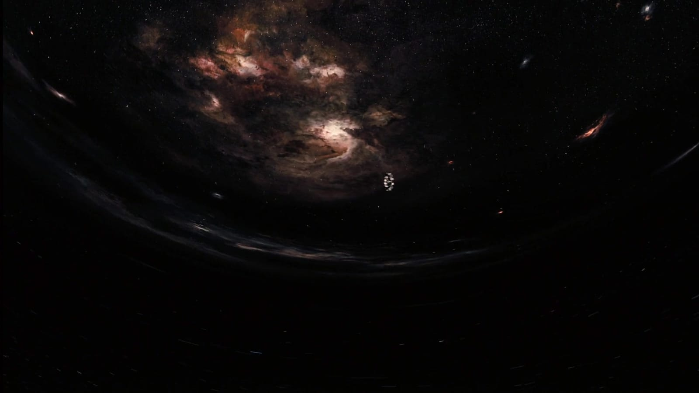
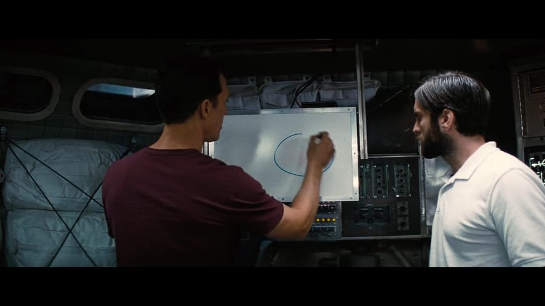
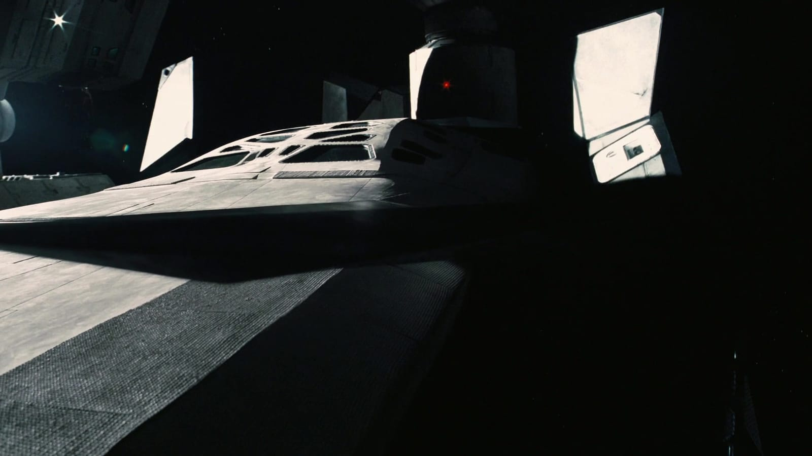
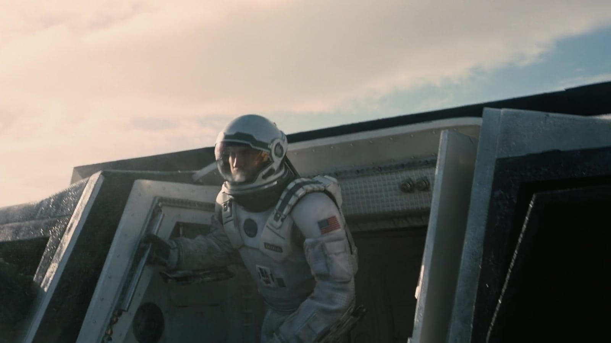
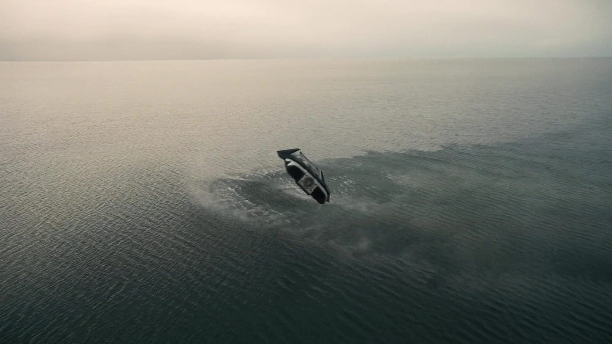
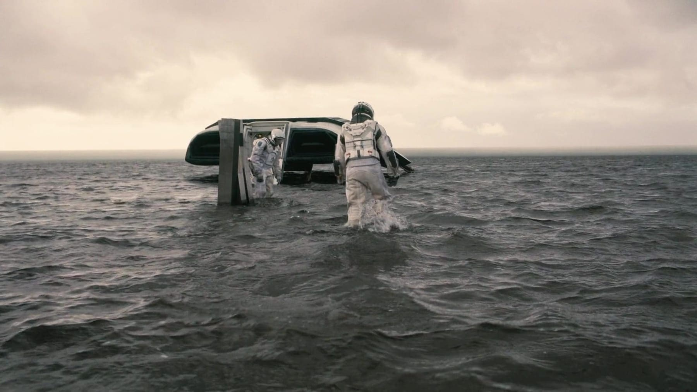
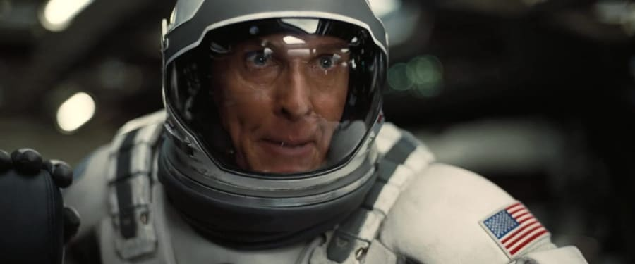
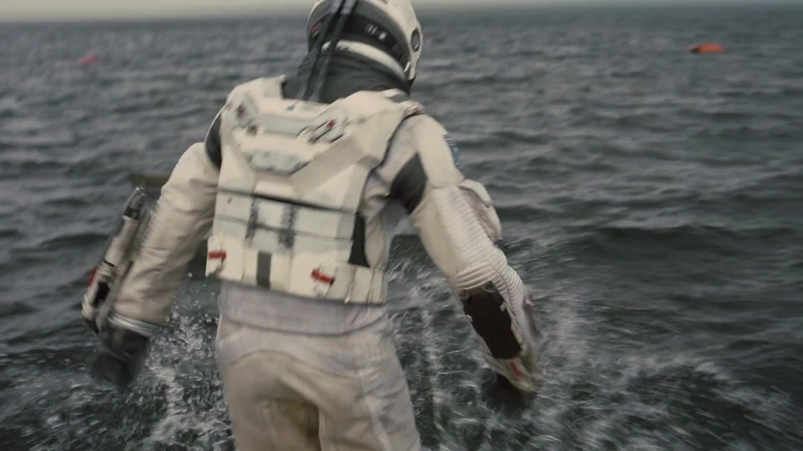
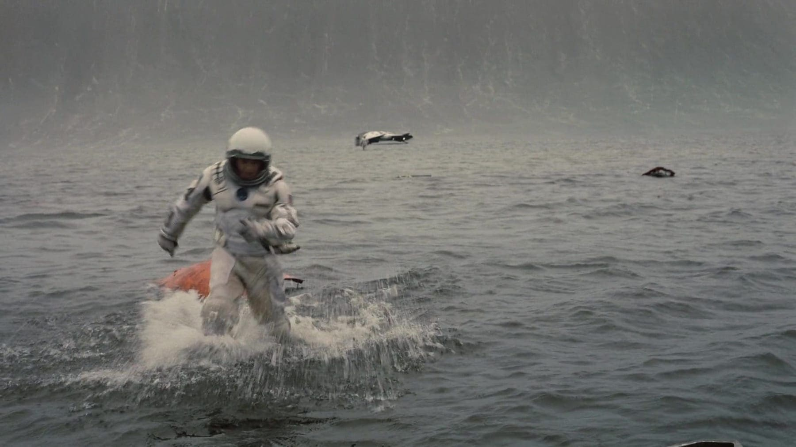
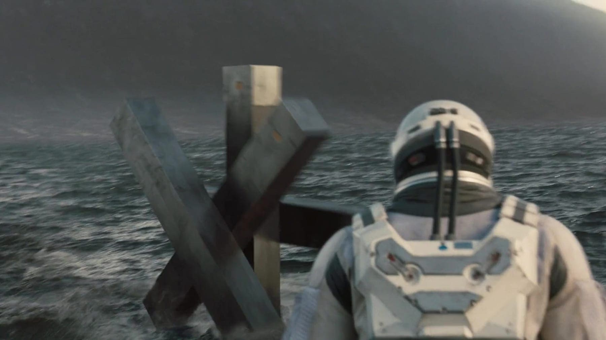
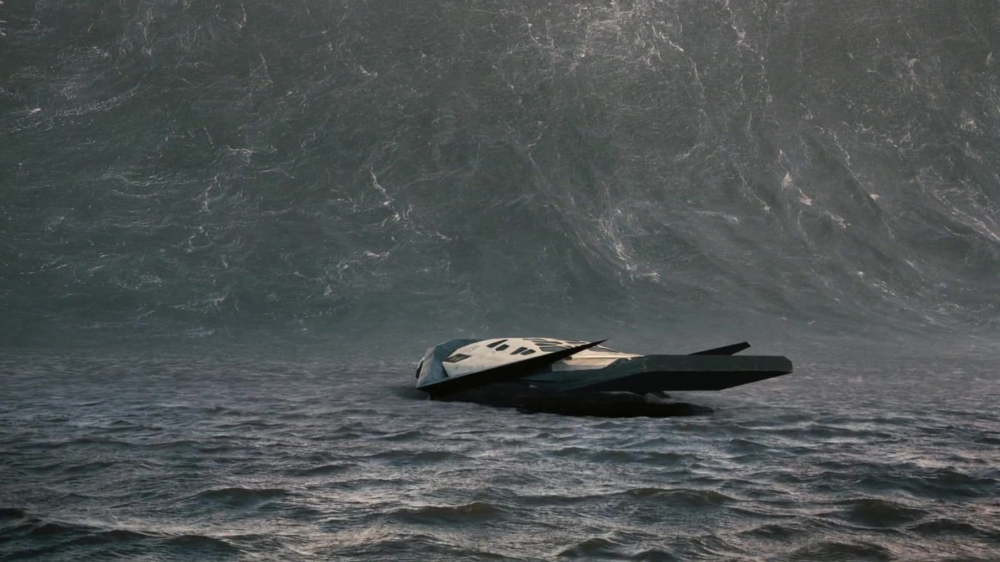
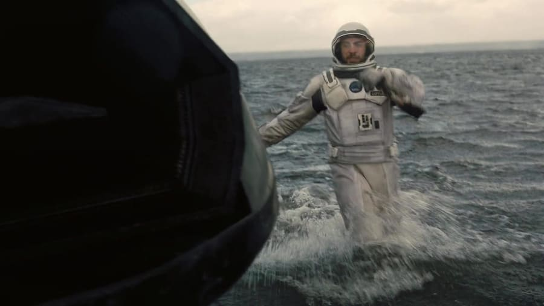
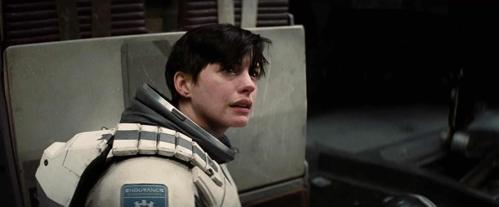
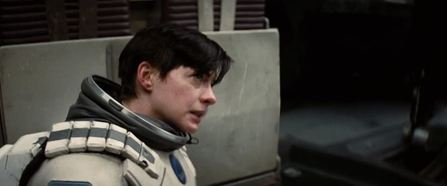
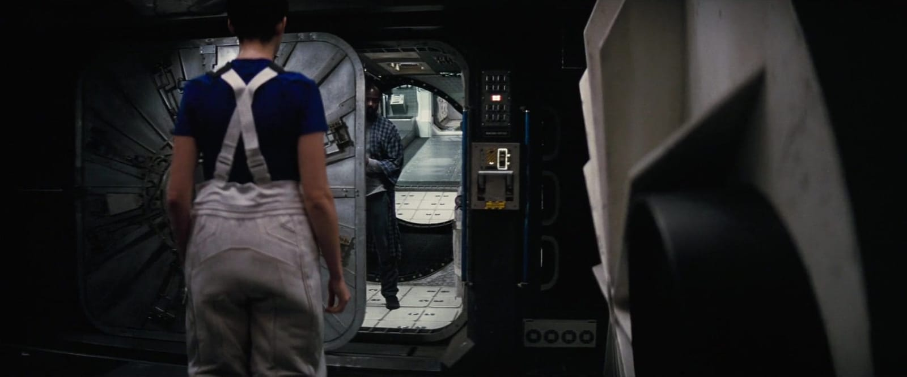
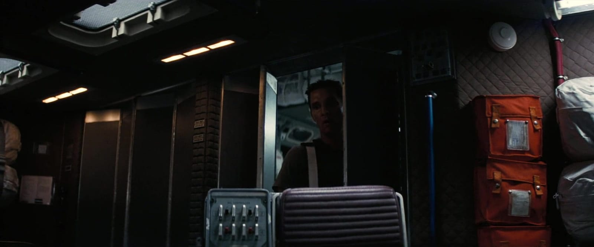
La ciencia
Estar hundido en el pozo gravitatorio de un agujero negro supermasivo hace que tu reloj corra más lento visto desde afuera: es dilatación temporal gravitacional. En Miller el efecto es brutal —una hora por cada siete años— y para que las cuentas cierren el planeta tiene que orbitar muy cerca de un agujero negro que además gira casi al máximo posible; si no, la marea lo despedazaría.
El factor de la película es extremo, pero el fenómeno es el mismo que ya miden los relojes atómicos a distintas alturas sobre la Tierra: más cerca de la masa, más lento el tiempo. Kip Thorne ajustó los números para que Miller fuera posible sin romper la física; la licencia dramática está en cuánto, no en qué.